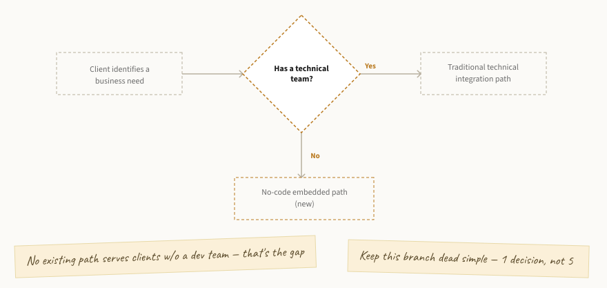

Open Banking North Star: An End-to-End Experience Strategy
The Situation
The Open Banking experience at a top-5 U.S. bank had been live since 2018 — technically functional, but strategy hadn't kept pace with how much client demand and complexity had grown around it. The gap wasn't isolated to any one touchpoint: it spanned the full client lifecycle, from a business stakeholder's first awareness that a solution existed, through the internal validation that stakeholder had to run to justify the investment, to the technical team's actual implementation and ongoing maintenance. There was no shared diagnosis of where any of it was falling short, and no modernization roadmap grounded in real client friction rather than internal assumption. Growth had outrun strategy.
The Bet
Rather than starting from point-fixes, I defined a structural framework — mapping how any client's business need should translate into a task, a product, and ultimately a solution — intended to be reusable across client types rather than built around any single feature. Critically, "client" here meant two distinct personas with different stakes in the same journey: the business stakeholder who owns the banking relationship and drives initial awareness and evaluation, and the technical team that later implements and maintains the solution. Treating them as one undifferentiated "client" had been part of why the existing experience underserved both.
Applying that framework to clients without a technical team surfaced a specific, previously invisible gap: no existing path served business stakeholders evaluating a solution before a technical team was even involved. That gap became the seed of the embedded finance concept — a genuinely new, no-code integration modality explored in parallel with the broader diagnostic work.

Getting Alignment
Separate current-state journey maps for each persona became the shared artifact that got Product and cross-functional partners aligned on where it actually hurt — and the two maps surfaced different problems. For the business stakeholder, the friction was upstream: no clear path to discover a solution existed, and no self-service way to build the internal case for it. For the technical persona shown below, the friction was downstream: manual verification repeated per service, opaque pricing negotiation, missing production tooling, reactive-only support. The future-state journeys, built from the same framework, gave partners a concrete, shared picture of the target across both personas.
In parallel, early prototypes built from the embedded finance concept forced concrete conversations between the Embedded Finance and Authentication teams about the real complexity of externalizing our experience into third-party platforms — a conversation that hadn't happened yet at that level of specificity.
Gated exploration
Account creation is required just to access a test environment.
Opaque pricing
Pricing requires manual, back-and-forth negotiation.
Redundant verification
Manual verification repeats before go-live.
Reactive-only support
No proactive alerting exists.
Same-day, self-service across the full journey — instant access, transparent pricing, automated verification, and proactive monitoring replace every manual gate identified above.
The Outcome
The North Star vision built from this diagnostic work became the foundation the bank is still executing against — directly shaping the 2024 roadmap and the 2025 Developer Portal redesign, with touchpoints spanning discoverability, developer tooling, and self-service across the Open Banking experience. The embedded finance exploration was a byproduct of that broader strategy work — original enough on its own to become the basis for a filed patent application (US19008933) for an embedded-finance shopping experience.
Case studies, solution pages, and partner content shipped to help business stakeholders self-identify the right offering before a technical team is even engaged.
Open Sandbox, API Playground, and updated documentation reduced friction in technical evaluation.
Webhooks and profile management shipped as the first self-service layer on top of the platform.
A full visual redesign relaunched in Oct 2025, repositioning the platform for a technical, decision-making audience.
The Reflection
The instinct to reach for a fix is strong when you can see friction clearly — and it would have been easy to jump straight to designing an embedded finance flow the moment the gap became visible. The harder discipline was building the structural framework first: a reusable way to map any client's business need to a solution, independent of any single product. That framework didn't just organize the thinking — it was what surfaced the highest-leverage problem in the first place. The gap for non-technical clients wasn't visible from inside the existing technical journey; it only became obvious once every client type was run through the same structure.
The framework also solved a problem I hadn't set out to solve: scalability of the team's own decision-making. Before it existed, every new client scenario prompted a fresh, case-by-case debate about how it should be handled — a real drag on a team already managing competing priorities. Once the pattern was defined, most new scenarios could be resolved by applying the existing structure rather than re-litigating it from scratch. That freed up real bandwidth — not hypothetically, but in the number of open strategic questions the team could actually take on at once.